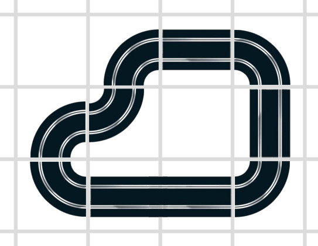

Challenge 9 - The Supreme Scalextric Architect
After many years of pursuing the role, you have been hired as The Supreme Scalextric Architect in a company producing slot car racing tracks. As such, your job is to design the longest and coolest possible Scalextric circuits.
Your company is still new, and for now it only creates three types of basic track sections:
- Straight sections (S)
- 90-degree curves (C)
- Double length straight sections (D)
All types of sections are designed to be easily interoperable, so they all have the same square dimensions (a D section has the same size as two S sections put together).
All sections are flat, no section is designed to intersect or go over or under another.
Input
The first line will contain an integer N, the number of cases for our problem.
Each case consists of a line with three integers separated by spaces: S, C and D, with each representing the number of available sections of the type identified by the corresponding letter.
Output
For each case, a line starting with "Case #x: " followed by the maximum number of sections which can form a closed circuit. If no circuit can be formed with the existing sections, the output will be 0.
Examples
Case 1: 5 2 7 |
Case 2: 0 4 0 |
Case 3: 3 7 1 |
In Case 1, the answer is 0, as it's not possible to create a closed circuit with the given sections.
In Case 2, the answer is 4. You can make a circle-shaped circuit with the 4 curved sections.
In case 3, the answer is 9. You can use every given section except for a single straight and a single curved section. An example circuit would be:

Limits
- 0 ≤ S, C, D ≤ 500
Sample Input
3 5 2 7 0 4 0 3 7 1
Sample Output
Case #1: 0 Case #2: 4 Case #3: 9